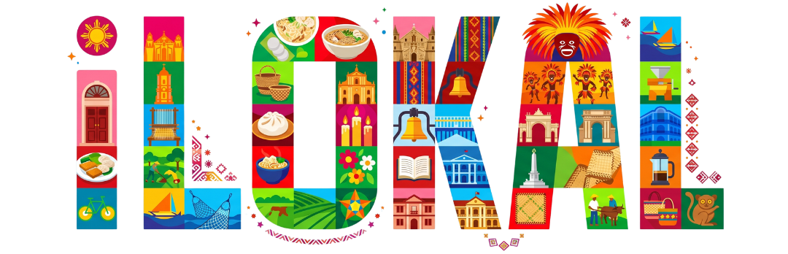

The Jaro Cathedral, formally known as the National Shrine of Our Lady of the Candles (Nuestra Señora de la Candelaria), is a Roman Catholic cathedral situated in the heart of the Jaro district in Iloilo City. As a premier religious and historical landmark, it serves as the seat of the Archdiocese of Jaro and stands as a cornerstone of Ilonggo faith and history. It is vital to Iloilo not only as a place of worship but as a symbol of the region's deep-seated Catholic roots and its former status as the "Queen City of the South." What makes it truly unique in the Philippines is its detached bell tower, located across the street in Jaro Plaza, and its distinctive "all-male" ensemble of saints lining the cathedral's interior pillars—a direct contrast to the "feminist" Molo Church nearby. The cathedral is woven into Iloilo's collective memory through the annual Jaro Fiesta, representing a blend of Spanish colonial influence and local devotion.

iLOKAL
Explore the City of Love
Forgot Password?
I already have an account
Sign up with
iLOKAL
Explore the City of Love
What type of user are you?
iLOKAL
Explore the City of Love
Enter personal information

Let's explore


Let's explore
Places

Jaro Cathedral

Plaza Libertad

Casa Mariquit

Sunburst Park
Heritage Landmark: Jaro Cathedral
Introduction
In order to read the full article, answer the quiz below
Quiz
What is the formal name of Jaro Cathedral?
A. San Agustin Church
B. National Shrine of Our Lady of the Candles
C. Miagao Church
D. Molo Church
Correct answer: B


iLOKAL
Tomas Confesor
@sitomasi2r
Share with friends
Overview
Swipe ›
Jaro Cathedral
One of the most important religious sit...
La Paz Batchoy
The most iconic dish from Iloilo—a rich noo...
Dinagyang
The Dinagyang festival is Iloilo's m...
No notifications yet
Wanpichit
Student
Edit Profile
Notifications
Privacy
Log Out